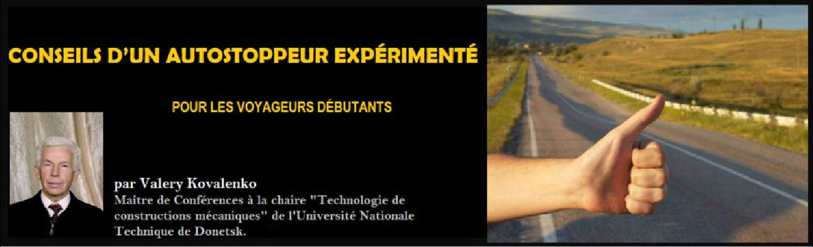
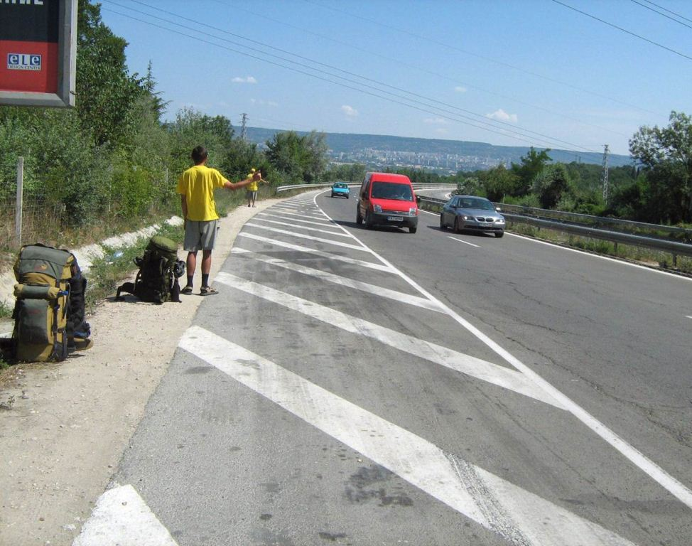

Conseils d’un autostoppeur expérimenté pour les voyageurs débutants
par Valery KOVALENKO

Pourquoi l'auto-stop ?
L'auto-stop diffère d'un voyage touristique, qui est habituellement tout planifié d'avance et strictement respecté pendant le voyage. Tout est connu d'avance : où vous allez, quel est l’itinéraire, dans quel hôtel vous serez logé et le programme des visites…
Mais lorsque vous voyagez en auto-stop, vous ne pourrez organiser votre voyage qu’approximativement, sans être sûr de l'itinéraire et, encore moins, de l'heure d’arrivée. Car vous êtes libre de choisir de changer l'itinéraire et même la destination initialement prévue.
On distingue le déplacement dans la même direction avec une participation financière au conducteur, que l’on appelle aussi le co-voiturage de l'auto-stop, où l’on va également dans le même sens, mais sans participer aux frais de voyage. Dans le premier cas, le passager s’entend avec le conducteur sur le montant des frais de voyage et paye une participation en conséquence. Dans le second cas, le voyageur s’entend avec le conducteur pour que le voyage soit gratuit. Est-ce possible ? Les gens inexpérimentés diront : « Le conducteur ne sera pas d'accord pour que le passager ne paye pas son voyage ». Mais ils ont tort. L'expérience montre que de tels voyages sont encore possible
Les sceptiques diront : « Pourquoi un conducteur ferait-il cela? Pour quelle raison transporterait-il gratuitement une personne inconnue dans son auto?
La réponse est la suivante : l’autostoppeur paie aussi au conducteur, mais non par l'argent. Alors comment ? – Par son attention. Pendant le voyage il devient moralement un « co-pilote ». Les conducteurs-professionnels avec l'expérience de plusieurs années (particulièrement les conducteurs des poids lourds à grandes distances qui restent seuls longtemps dans la cabine) connaissent parfaitement cela. L’autostoppeur embellit la monotonie du voyage, soutient le conducteur en dialoguant avec lui et lui aidera à surmonter la fatigue la nuit sans se figer au volant.
Pour les grands trajets, l’autostoppeur a une tente et sa literie. Pour le sommeil de nuit, il n'a pas forcément besoin d'un hôtel. Ainsi il ne gêne aucunement le conducteur, si ce dernier veut s’arrêter pour passer la nuit dans n'importe quel endroit, y compris au bord d’un champ. L’autostoppeur installera sa tente à côté. Il est facile d’en déduire que la gratuité du transport et celle de ce type de logement permettront de voyager à moindre coût. Il y a par ailleurs une autre particularité entre les deux modes de voyages précités : vous pourrez, par l’auto-stop, vous retrouver à visiter des endroits que vous n’auriez jamais découverts avec un voyage organisé.
L'auto-stop en pratique
J'ai fait les premiers voyages dans le pays étant encore l'étudiant. Dans les années suivantes j’ai visité toutes (sans exception) les républiques d’ex-Union Soviétique qui sont devenues désormais 15 États indépendants. Initialement tous étaient des voyages touristiques. Mais quand j'ai maîtrisé l'auto-stop (dès 2006), j’ai commencé activement à voyager à l'étranger.
Pour le moment j’ai visité 39 pays de quatre continents. Ce sont les pays suivants : en Europe - l'Autriche, la Belgique, la Bulgarie, l'Allemagne, la Grèce, le Danemark, l'Espagne, l'Italie, le Luxembourg, le Monaco, la Norvège, la Pologne, le Portugal, la Roumanie, la Slovaquie, la Finlande, la France, la Suède ; en Asie - le Viêt Nam, le Hongkong, l'Inde, l'Iran, le Cambodge, la Chine, le Laos, la Malaisie, le Singapour, la Syrie, la Thaïlande, la Turquie; en Afrique - l'Algérie, l'Egypte, la Tunisie, en Amérique du Sud - l'Argentine, la Bolivie, le Brésil, le Paraguay, le Pérou, l'Equateur.
J’ai visité tous les points remarquables dans le monde. En Asie :
a) le point extrême du Nord, le cap Sterlegov (il se trouve un peu au sud du cap Tchelyouskine) - la Russie, le Taïmyr, 2013 ;
b) le point extrême du Sud, le cap Tanjung Piaj - la Malaisie, 2015 ;
c) le point extrême oriental, le cap Dejniov - la Russie, 2015 ;
d) le point extrême occidental, à l'ouest de Lisbonne - le Portugal, 2011 ;
e) le centre de l'Eurasie, ville de Semipalatinsk - la Russie, 2014.
En outre, j’ai visité certains endroits uniques dans d'autres continents :
a) le point extrême sud de l'Europe, la rive du détroit de Gibraltar - Espagne, 2011 ;
b) le point extrême nord de l'Afrique, au nord de Bizerte - Tunisie, 2009 ;
c) le point extrême au sud de l'Amérique du Sud, au sud de la ville de Rio Gallegos - Argentine 2012 ;
d) l'équateur, Quito - Equateur 2012 ;
e) le plus haut sommet de la chaîne de montagnes de l'Olympe - Grèce 2007.
Des 39 pays visités dans le monde, j’en ai parcourus les 28 en auto-stop., ce qui représente 72 % de mes voyages.
L'organisation du voyage par l'auto-stop
Supposons que l'itinéraire du futur voyage soit déjà fixé. Il a été défini par vos goûts, votre disponibilité temporelle et les ressources financières. Comment organiser ce voyage ? Quel travail préparatoire doit être fait ?
Il est souhaitable d'avoir une lettre de recommandation, une sorte de garantie de la part d’une organisation sportive ou d’une société, par exemple, du Conseil de la Fédération du Tourisme et du Sport. Dans cette lettre on indique les objectifs du voyage, l'itinéraire du voyage (il est désirable de la présenter sous forme de carte-schéma). Un tel document n'est certes pas strictement obligatoire, mais parfois il peut être utile, en particulier, pour justifier le voyage dans un pays où l'obtention d'un visa sera nécessaire.
Les problèmes de visa. Il est nécessaire préalablement d'apprendre dans quels pays l'entrée est possible sans visa. Pour les autres pays programmés dans le voyage, il est nécessaire d'avoir les visas et préférable de les obtenir avant le départ. Néanmoins, dans certains pays, le visa pourra être obtenu à la frontière précédant l'entrée du pays.
L'acquisition des titres de transport. Votre périple d’autostoppeur peut commencer dans un pays autre que le vôtre. Pour rejoindre le point de départ, il sera donc peut-être nécessaire de prévoir un billet de transport qu’il faudra acheter au préalable.
Un sac à dos. Les autostoppeurs n'utilisent pas de valises pour transporter des objets. Un sac à dos est toutefois nécessaire. Il doit être préparé très soigneusement. D'une part, un sac à dos ne doit pas être trop grand (pour ne pas avoir des problèmes supplémentaires à son transport). D'autre part, dans un sac à dos doivent être disposés tout le nécessaire au voyage : la tente, le tapis, le duvet, les vêtements, les produits, la vaisselle pour la préparation de la nourriture, le thermos, la pharmacie de poche, l’assortiment d’instruments de réparation. Dans les cas particuliers on prend avec aussi le bec à gaz avec le ballon (seulement quand on ne prévoit pas de vol en avion).
On choisit les dimensions et la forme du sac à dos individuellement. Par exemple, j'utilise pour les marches le sac à dos de volume de 60 litres (c'est un moyen sac à dos selon les dimensions, mais il existe beaucoup plus grand). La section transversale du sac à dos a une forme rectangulaire (pas ronde). En utilisant l'expérience des voyageurs experts, je place tous les objets dans deux petites pochettes : une pochette est destinée aux vêtements, la deuxième - pour les produits.
Si selon l'itinéraire on suppose la traversée en avion, il faut avoir en vue que le poids permis du bagage est d'habitude limité par 20 kg. Si le poids est plus élevé, il est nécessaire de payer un supplément.
La technique de la circulation par l'auto-stop
Le choix de l’emplacement pour faire de l'auto-stop. C’est une circonstance très importante. La possibilité d’un voyage en auto-stop dépend en grande mesure de cette action. Dans un cas on peut attendre des heures qu’une voiture s’arrête et dans l'autre partir assez rapidement.
Mettes-vous à la place du conducteur : ce dernier doit de loin vous remarquer, avoir la possibilité de freiner, de s'arrêter. Il convient donc de s’interroger aussi sur la place qui sera nécessaire pour stationner … Le conducteur, bien avant le contact personnel avec l’autostoppeur, doit pouvoir supposer où le voyageur va aller et s'il lui sera agréable d’avoir cette personne comme compagnon de route. Pour cela, il y a aussi certaines recommandations.
Si vous partez d'une grande ville, tout d’abord il faut se trouver à sa périphérie, sur le point de départ dans direction désirée. À la périphérie de la ville on peut arriver à pied ou par le transport public.
Il est désirable de choisir la place idéale pour arrêter la voiture sur une partie vallonnée de la route (pas dans les plaines). À la fin de la montée l'auto (particulièrement pour un camion) ralentit la marche et conducteur peut plus facilement s’arrêter quand dans une descente, où la voiture aura une grande vitesse. Une bonne position se trouve aussi à la fin du virage droit (au cas de circulation droite). Dans ce cas l’autostoppeur a plus de chances d'être vu par le conducteur. Si l'auto-stop n'est pas concluant, il faut partir et changer sa position.
Un geste auto-stoppeur. Un geste traditionnel auto-stoppeur est : une main (généralement à droite) est étendue sur le côté, pliée en poing avec le pouce levé vers le haut.
Dans la photo, on peut voir deux auto-stoppeurs en T-shirts jaunes (ils sont mes compagnons de voyage). Au premier plan, vous pouvez voir un grand sac à dos (90 litres), le fond est un sac à dos plus petit.
Un tel geste est adopté en Europe et dans la plupart des pays du monde. Mais il y a des exceptions. Par exemple, en Iran, un tel geste n’est pas valide. Tous les doigts doivent être reliés entre eux (JAMAIS VOTRE POUCE NE DOIT ETRE RELEVE VERS LE HAUT).
Les premières relations avec le conducteur. C'est l'épisode qui va définir si le voyage sera possible. Si l'auto s'est arrêtée près de l'autostoppeur, il faut saluer le conducteur et tout de suite (sans grimper en voiture, c'est important !) expliquer que vous voulez déplacer par l'auto-stop, c'est-à-dire gratuitement. S'il y a quelques doutes (particulièrement dans le pays étranger et si vous n’avez pas une bonne connaissance de la langue locale), si le conducteur vous a correctement compris, il faut de nouveau expliquer ce que vous faites. Si cela n’est pas fait, à la fin du voyage le conducteur peut demander l'argent pour le passage. Et ici il vous faudra vraiment payer et il n’y aura pas d’autres solutions.
Un conducteur qui s’arrête peut se trouver être un chauffeur du taxi (par exemple, un chauffeur privé sans signes de reconnaissance sur l'automobile). Il faut l’apprendre dès la première minute des relations et poliment refuser le voyage.
Si le conducteur en réponse à votre demande refuse de vous transporter par l'auto-stop, il faut ne pas se vexer contre lui, mais remercier pour s’être arrêté et lui souhaiter une bonne route.
Il faut avoir en vue que plusieurs conducteurs sont psychologues expérimentés et ils reconnaissent vite la fausseté dans vos conversations ou les actions. Soyez sincère dans les relations avec le conducteur. Il me semble que le conducteur vous acceptera d’autant plus facilement pour ce voyage s’il ressent une communauté de vos âmes.
Les relations avec le conducteur au cours du voyage. Vous avez droit d'entrer dans la voiture. Uniquement quand vous vous êtes persuadés que le conducteur est d'accord de vous transporter par l'auto-stop (gratuitement). Le conducteur d'habitude indique où vous pouvez vous installer. S'étant trouvé dans la voiture, ne pensez pas que vous avez accompli votre tâche, et maintenant pouvez se reposer tranquillement, sommeiller, lire le livret, s'occuper de quelques affaires. Non. Maintenant vous êtes l'adjoint moral du conducteur, son co-pilote.
Avant tout, il faut tâcher d'engager la conversation avec le conducteur. Apprenez comment il s’appelle et d'une manière discrète interrogez sur son voyage, l'itinéraire du parcours. Et par la suite, pendant tout le voyage, soutenez le contact avec le conducteur. Ne faites pas du zèle en même temps : si on ne sait pourquoi le conducteur n'a pas l'intention de soutenir la conversation, laissez-le en paix pour un certain temps.
La couchée de l’autostoppeur. Le plus souvent l’autostoppeur dort dans sa tente. C'est pratique : il ne faut pas spécialement chercher le logement et interrompre à cause de cela le voyage par l'auto-stop. Même si vous vous êtes séparés du conducteur tard le soir ou dans la nuit, vous pouvez passer la nuit toujours dans la tente.
Au voyage de longue durée commun le conducteur peut vous proposer la couchée dans sa voiture. À vous décider, d’accepter cette proposition ou non.
L'alimentation de l'autostoppeur. D'avance, il faut prendre soin de la sélection des produits pour le voyage. On prend souvent : du lard, du saucisson de fumage froid, les nouilles solubles, de la purée, les bouillies; les paquets de thé et de café, les sucreries, les noix, les abricots secs…
Pour les voyages de longue durée par auto-stop le conducteur peut proposer (pas toujours) de partager le repas avec lui. Il ne faut pas refuser, mais aussi il ne faut pas se goinfrer.
Nous faisons l'auto-stop en Bulgarie (au départ de Varna)
Les relations avec la population locale dont vous avez, au mieux, une faible connaissance de la langue
Il est toujours préférable de connaître la langue du pays dans lequel vous voyagez. Néanmoins, dans beaucoup de pays, des connaissances de base en langue anglaise permettent de se débrouiller. Dans le cas où vous ne parliez ni la langue locale ni l’anglais, les manuels de conversation aideront partiellement, par exemple, russo-allemand, russo-arabe et ainsi de suite. Mais il ne faut pas trop espérer de ces manuels de conversation : votre prononciation (selon la transcription) des mots inconnus étant souvent incorrecte. Il vous restera toutefois la présence du smartphone avec le logiciel de traduction qui est un allié très intéressant.
Conflits
Il vaut mieux ne pas les admettre. Il faut avoir en vue que si vous vous comporterez hostilement par rapport au conducteur, cela, probablement, vous fait vous retrouver vite sur l'accotement du chemin. S'il y avait quand même un malentendu, par exemple, avec la population locale dans le pays étranger, alors il faut comprendre que pratiquement toutes les procédures (même avec la participation des autorités locales et même la police) termineront presque toujours en faveur de la communauté locale.
Conclusion
La pratique de l’autostop demeure assez exceptionnelle et les voyages par auto-stop ne composeront souvent que la partie (plus ou moins considérable) de votre voyage. Ainsi, en cas de nécessité, il vous faut vous servir du transport en commun ordinaire: l'autobus, le train, l'avion.
Un élément important du voyage par l'auto-stop : le voyageur doit avoir du temps disponible. L'auto-stop et la hâte ne sont pas compatibles !
Il est souhaitable, pour commencer, de voyager par l'auto-stop dans son pays : d'abord sur les itinéraires courts et simples, puis pour des destinations plus complexes et plus longues. Procurez-vous l'expérience des voyages communs avec des compagnons ayant l’expérience de ce type de déplacement. Vous pourrez ensuite vous déplacer plus librement et en autonomie y compris à l'étranger.
Découvrez de nouvelles sensations - voyagez par l'auto-stop !
P.S. Plus des détails concernant les voyages de Valery KOVALENKO (sous le pseudonyme «Kros») sont disponible le site www.3sea.org.ua.
Partager cette page